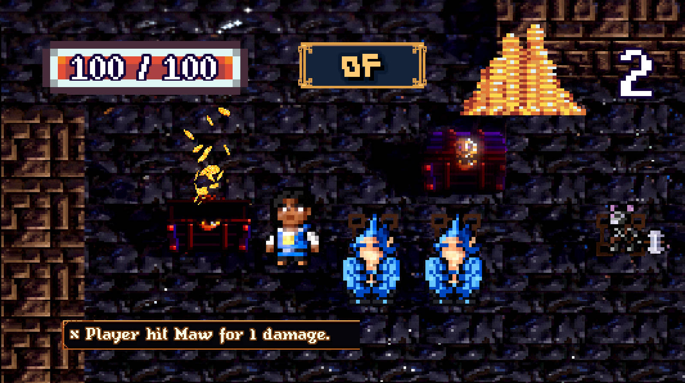
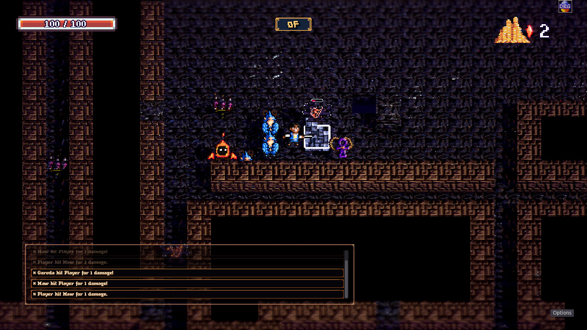

Godot and C#: A Viable Unity Alternative
 SatiRogue by @TetrisMcKenna
Godot is a viable alternative to Unity — not just for early adopters, but for game developers and artists across the entire skill spectrum.
The engine provides a significantly better development experience (via text-based resources) and a snappy, responsive user interface. We'll spend the rest of the blog defending that statement and addressing common concerns about Godot.
Over the last few months, I've heard dozens of questions from interested users about Godot, the C# support it provides, and the future of the engine. It's important to note that I am in no way officially affiliated with the Godot Engine organization. I have, however, spoken with some of the core engine developers and contributors and I'd like to put the arguments against Godot and C# to rest, once and for all.
There's a lot to cover, and it's all good news — so let's dive in!
Unrelated: this blog has officially moved away from Medium!1
🎇 Godot's Big Year
If you haven't been watching too closely, you might have missed some of the news! Godot 4 is now in beta, and it's shipping some impressive new features:
- Vulkan renderer
- Signed distance, field-based global illumination (SDFGI) for large open worlds
- GPU lightmapping
- Custom sky shaders
- Automatically generated LOD (level-of-detail) meshes
- .NET 6 support
- Revamped shader language
- Circular dependencies support for GDScript
- ...and countless other changes
Aniela — a lighting study made in Godot by @cybereality demonstrating Godot 4's new SDFGI features.
To top it all off, C# support has been completely overhauled by migrating away from mono and integrating support for .NET 6 directly. We'll come back to that in a bit.
Overwhelming Support
Godot continues to receive an overwhelming amount of support from the community. The creator of Godot, Juan Linietsky, describes how Godot suffers from the best possible problem:
we have too many people who are doing things really really efficiently and really well."2
Essentially, the sheer number of contributors (1,800+ on GitHub) almost guarantees that any specific feature is being worked on at any given moment.
On Patreon, Godot now receives over $15,000 USD of donations per month. That's an increase of $2,000 USD per month since I last checked on it in the summer.
The Godot subreddit, r/godot, now has over 101,000 members, an increase of at least 5,000 users since the summer (probably in large part to Unity's missteps). The official Godot Discord now has over 50,000 users.
💁♀️ Addressing Your Concerns
On Reddit (and occasionally elsewhere), interested users will ask if C# is "ready" or a "first-class" citizen in Godot. The answer is simple: yes.
If you don't believe me, read on. We'll respond to each of the common arguments against Godot and its support for C#.
Where's the asset store?
When I tell people that Godot is a viable Unity alternative, this is usually the first counterargument I hear, and for good reason. Godot doesn't have a monetization system for assets...yet.
Of course, Godot does have an official Asset Library with over 1,500 assets, but they're all free. 🙁
Most of us would normally be thrilled about free assets, but when you're an artist or developer who relies on selling your assets to support yourself, giving away your products is a no-go. It's only fair that you should be able to make a living doing what you're good at.
Monetization, as someone pointed out on Reddit, requires a lot of bureaucratic effort. Collecting payments and being responsible for payment handling is a gigantic chore.
In 2021, the founder of Godot — Juan Linietsky — confirmed a paid asset marketplace was on the way.
The Godot team recently announced the formation of the non-profit Godot Foundation, citing a paid asset marketplace as one of the primary motivations:
As Godot keeps growing, so do our needs. Godot's size merits the flexibility of having its own organization and the opportunity to explore broader funding sources.
Examples of this are crowdfunding campaigns (like Blender or Krita do), the highly requested ability for users to sell assets on an asset library (and have a share going to the Godot Foundation), selling merchandise, and other types of funding.
While that doesn't solve the problem today, you can probably get pretty far with the 1,500+ free assets that already exist.
For some users, having access to a multitude of assets is non-negotiable. Those users will not use Godot until its asset library is a thriving, paid marketplace. For most developers, however, I believe the boost in developer productivity Godot provides over Unity et al. more than makes up for any reduction in assets.
For example: if you're creating your own art, or purchasing art and models from artists, you're probably writing all your own custom code anyways. Why not do it in Godot? The editor won't hang for 2 minutes straight whenever it decides to scan your assets, unlike in other engines, cough cough.
What About C#?
People often ask "is C# a first class citizen?" when looking into Godot and C#. I believe the question became popular when Godot first introduced C#. Like all new features, C# support was initially incomplete and poorly documented, but solidified over time. These days, the Godot Docs provide almost every code example in both C# and GDScript, and C# support in Godot 3 (LTS) is incredibly robust.
If you are looking for C# API docs, paulloz maintains a C# version of the Godot API docs.
Just to reiterate, Godot supports two first-party programming languages: GDScript and C#. All other language bindings are unofficial, third party projects.
When asked if the new GDExtension support in Godot would replace the need for first-party C# support, neikeq (one of the core Godot C# contributors), explained that C# support would continue to be built-in because it would be difficult (if even possible) to load more than one .NET assembly through a native extension.
Future of C# Support
I asked neikeq a couple of questions about C# in Godot via private message in Discord, and with their permission I am posting some of the interview here (lightly edited for clarity):
me: A lot of people are on the fence about Godot because they're not sure C# support is planned long term, or maybe they've been burned by the lack of documentation in the past. What do you want them to know?
neikeq: They shouldn't worry about C# support in the long term. There was a lot of concern about that this year because initially C# wasn't included with the Godot 4 alpha releases, but now it's already there and soon it will be unified as a single version of Godot.
One of the most important factors for the future of C# support is that starting with Godot 4, it's much easier to maintain. There is still room for improvement (for example, changing/adding a type for marshalling takes a bit more work right now). But the amount of work we took off our shoulders is huge. That's time that can be spent on other parts like addressing issues.
Hopefully there will be less confusion about some things as well. Previous marshalling errors that would be printed at runtime are now compiler errors.
me: Is the maintenance effort easier because of the new source generators, or other changes that were made?
neikeq: We no longer build the Mono runtime ourselves, which was especially painful on platforms like wasm, iOS and even Android sometimes. As well as having to maintain build code for some of those platforms and ensuring that it works (like AOT for iOS). That's all offloaded to MSBuild with the official .NET releases. Granted we don't have mobile and wasm support yet but when the time comes, it will be easier to implement. The new hosting + pure C# + source generators is also easier to maintain than our previous approach with the Mono embedding APIs (although marshalling needs to be improved in this regard as I mentioned).
me: Any closing words to those who were worried C# support was going away?
neikeq: We don't have any intention of removing C# support because a lot of people in the industry communicate to us that C# support is a big factor in adopting the engine.
A Bigger C# Ecosystem
Still skeptical about taking the plunge on an open source game engine? Allow me to sweeten the deal by showcasing some awesome C# projects.
Our feature image for this article is from SatiRogue, a "turn-based dungeon-crawler rogue-like RPG, made with Godot 3.x C# + RelEcs" by TetrisMcKenna. The source code is freely available on GitHub under the MIT license.

Here's a few other awesome projects written in C#:
Carnagion on GitHub derkork on GitHub Byteron on GitHub
🐤 Free Stuff from Chickensoft
Chickensoft had a good first year: what originally started as a C#-focused fan club for Godot has blossomed into a small community of enthusiastic package authors and game developers. Our community members have helped answer technical questions about Godot and C#, shared a number of open source packages, and filed multiple bug reports on the Godot engine (some of which have already been fixed!).
Ready for Godot 4
I'm pleased to announce that all of the Chickensoft packages have been officially updated for Godot 4!
By adding a few nuget <PackageReference> tags to your .csproj file, you can get node-based dependency provisioning, logging, automated testing, and state machines up and running with Godot 4, for free!
All of the Chickensoft packages were dogfooded, meaning I built them because I was trying to solve the same problems every time I created a new game project. I never did finish a game, but at least I have some tools. Maybe next time...
Announcing GodotEnv
GodotEnv is a command line tool to help manage Godot addons and quickly create new Godot projects from a template.

While learning Godot, I kept running into the same few headaches over and over. When trying to make my code reusable across game projects, I realized there was no easy way to keep my addons up to date while I was still developing them. Likewise, whenever I created a new sandbox project, I had to copy a dozen or so files into the new project every time.
GodotEnv's addon management system allows you to declare dependencies in their own file (to prevent versioning headaches with git submodules), while template generation enables you to quickly create new projects without having to copy over all the files you need each time.
Addon Management, Simplified
Godot addons are simply git repositories with an addons/your_addon_name folder inside them. The contents of that folder (scenes, scripts, art assets, etc) will be copied to a project folder's addons/your_addon_name when a user installs your addon. Because addons are a flat folder structure, people often think to use git submodules for addons in their project repositories. I initially tried git submodules and found it was too difficult to keep everything up-to-date across all of my projects that were using the addons.
:::info When using C# with Godot, you have two mechanisms for reusing code: addons and nuget packages.
Importing nuget packages is as simple as adding them to your Godot project's .csproj file. Unfortunately, you can't really import scenes or other assets from nuget packages. They're only good for reusing code.
Addons, on the other hand, allow you to reuse anything. :::
If git submodules also sound too painful to you, GodotEnv allows you to declare what addons your project needs in an addons.json file so it can install them for you.
GodotEnv also lets you install addons by copying or symlinking to local folders.
{
"path": "addons",
"cache": ".addons",
"addons": {
"godot_dialogue_manager": {
"url": "https://github.com/nathanhoad/godot_dialogue_manager",
"source": "remote",
"checkout": "main",
"subfolder": "addons/dialogue_manager"
},
"my_local_addon_repo": {
"url": "../my_addons/my_local_addon_repo",
"source": "local"
},
"my_symlinked_addon": {
"url": "/drive/path/to/addon",
"source": "symlink"
}
}
}
Then, all you have to do is run the following:
🎬 Conclusion
The Godot ecosystem provides an asset library, monthly game jams, and numerous developer communities. If you're using C# with Godot, you can use just about anything on nuget in your project, unlocking the entire C# ecosystem in addition to everything Godot has to offer. Whether you're still planning your project or putting the finishing touches on it, there's an entire ecosystem in place to support you. Godot apps can be released on every major platform, and multiple companies can provide support for developers who wish to publish their games on consoles.
Making Godot games with C# is an incredible experience, and it's only getting better. If you're looking to start (or continue) your game development journey, you are more than welcome to be a part of our open source community here at Chickensoft.
If you're already making games with Godot and C# and want your project featured in a blog, let's get in touch!
Join our Discord: https://discord.gg/MjA6HUzzAE
Footnotes
-
Hosting the blog on a website instead of on Medium allows me to integrate custom widgets: it's a big win all around. If you like this website, feel free to fork it. Besides, hacker news readers (who have been the most engaged audience so far) tend to dislike Medium because of the reading limit. If you're reading this from hacker news (or anywhere else), welcome! ↩
-
Tune into around 00:48:00 of The Role of Open Source Game Engines: Godot and O3DE on the Podcast Building the Open Metaverse ↩